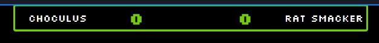

click here to skip down to advanced features to learn how to use the controller with
start.gg
Basic Setup
- Open the links on the top bar for the controller and scoreboard in a new tab
- add the link to the scoreboard as a browser source in OBS Studio
- Copy the link to the scoreboard
- Add a New Browser source in OBS Studio
- Paste the link and ensure that its size is 1920x1080 (also check your stream settings to ensure that its
output and window size is also 1920x1080)
- add the controller to OBS Studio as a dock, this step is optional but is recommended as it allows you to use
the controller from within OBS Studio
thus removing the need to flip through tabs
- Copy the link to the controller
- On the top bar in OBS, click on "docks" > "custom browser docks"
- paste the link to the controller and name it
- You are now done with the basic setup and should have somthing like the below screenshot,
(docks in OBS sort of behave like windows in windows so if you dont like it floating around you can drag it and
place it in the panels as you please)
Advanced Features
Using Start.gg Match Numbers
NOTE: this feature may be buggy as the current code is for the local event this overlay was originally made
for and is hard coded to take look for the bracket in a from a certain place (This is as i initially planed to not
publish this).
That said, it will only work if the ultimate singles (pulling match data is not setup to work with doubles events
yet) event is the first event listed on the
"start.gg/tournaments/[event name]/event" page.
If your event is not set up this way, consider checking out the
source code and downloading a version to
modify yourself
as the scoreboard can be used via launching the scoreboard and controller html files as a live server directly
from VS CODE using the
live server add on.
- Obtain a
start.gg api token
-
(these are case sensitive and should be treated as a password, this site does not save token info, for
transparency this project is
open source and hosted via github pages)
-
(Additionally, start.gg will only show your token to you once upon generation so be sure to save it
somewhere secure)
-
Enter the API token into the controller
-
in the tournament link field of the controller, enter the "/tournaments/[event name]" part of the event link
-
Now you can get tags from matches by simply entering the match identifier into the match number field (the
match identifier is the 1-2 letters next to a set)
